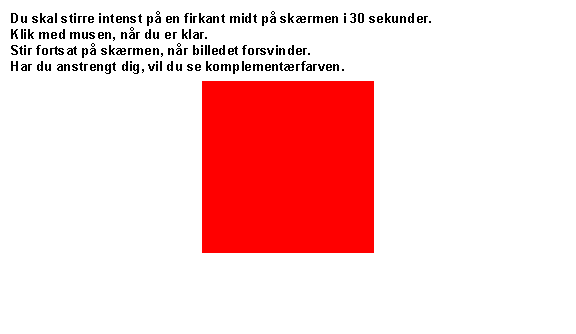

Stirrer man på fx på en rød flade i et minut eller mere trættes eller blindes de nerveceller i øjet, som er følsomme for rødt lys. Når man derfor umiddelbart efter ser på en hvid flade reagerer disse nerveceller kun delvist. De andre nerveceller reagerer på komplementærfarverne i den hvide skærm. Derfor vil man se et blågrønt billede efter at have stirret på en rød flade.
